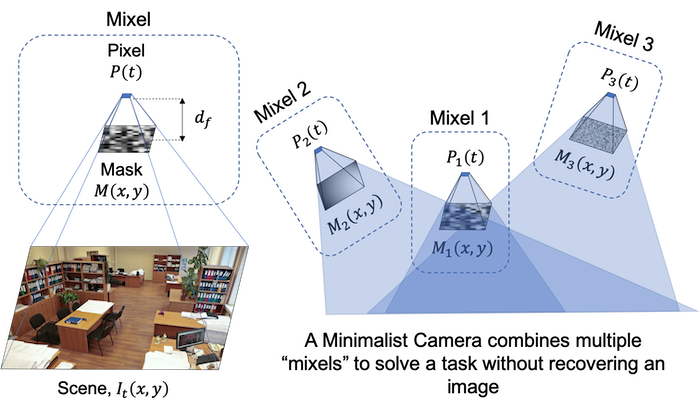
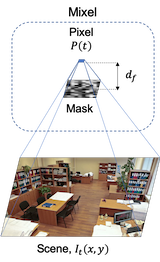
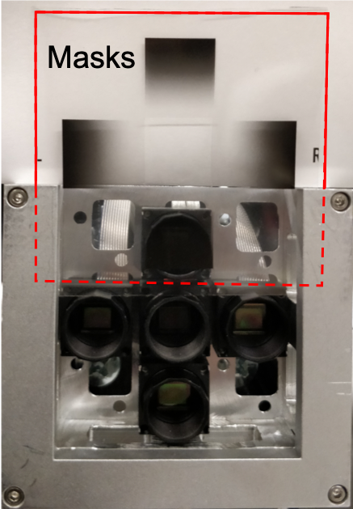
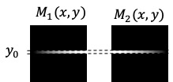
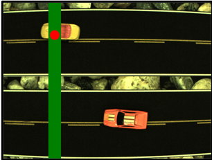
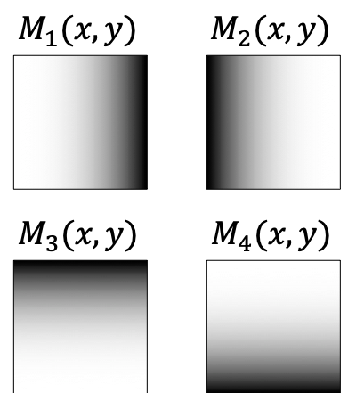
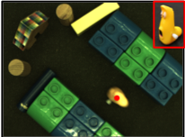
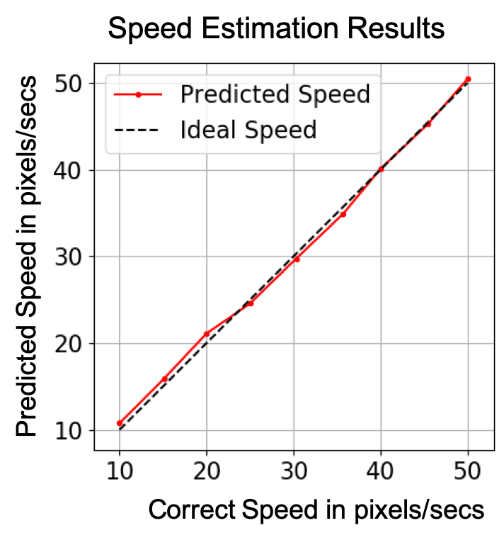
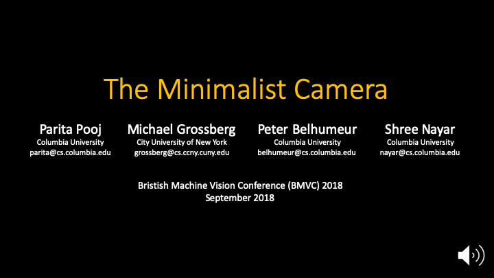

The Minimalist Camera |
|  | |
We present the minimalist camera (mincam), a design framework to capture the scene
information with minimal resources and without constructing an image. The basic sensing
unit of a mincam is a ‘mixel’ — an optical photo-detector that aggregates light from
the entire scene linearly modulated by a static mask. We precompute a set of masks for a
configuration of few mixels, such that they retain minimal information relevant to a task.
We show how tasks such as tracking moving objects or determining a vehicle’s speed can
be accomplished with a handful of mixels as opposed to the more than a million pixels
used in traditional photography. Since mincams are passive, compact, low powered and
inexpensive, they can potentially find applications in a broad range of scenarios. |
Publications
"The Minimalist Camera,"
P. Pooj, M. Grossberg, P.N. Belhumeur and S.K. Nayar,
British Machine Vision Conference 2018, {BMVC} 2018, Northumbria University, Newcastle, UK, September 3-6, 2018,
pp. 141, Sep. 2018.
[PDF] [bib] [©]
|
Images
|  |
|
High Level Idea:
The Minimalist Camera takes a step toward answering the question: what is the minimum
number of pixels needed to retrieve information relevant to a task? We provide a design framework
to answer this question using the camera architecture inspired from a Single Pixel Camera.
A ‘mixel’ (masked pixel) is the smallest unit of a Minimalist Camera. A mixel, as shown on the left,
is a pixel that measures a brightness of P(t) at time t by aggregating light incident
through the static mask, M(x,y) placed at a distance of d_f.
We design the Minimalist Camera (MinCam) by combining multiple mixels. Two main design questions
are addressed to design a MinCam: 1) What masks are useful to solve a given task?
2) Can we solve the task using the minimum number of mixels.
|
| |
|
|
|  |
|
Hardware Prototype:
We build a hardware prototype for our proposed MinCam design. Each camera is equivalent to
a Mixel and gives one measurement. Figure (a) shows the grid of 48x48 pixels at the center
of a camera’s sensor array. This grid is averaged to obtain one 12-bit mixel measurement, P(t).
The mask design for four outer mixels is slid into the slot as shown in (b).
(c) Four outer cameras become mixels after the mask is placed. (d) An
example of a mincam prototype with four mixels and a center camera with lens to capture
ground truth.
|
| |
|
|
|  |
|
Intrusion Detection along a 1D Boundary:
1D intrusion detection at boundary, y = y0 can be detected using a MinCam with two mixels.
Two masks designed as shown in (a) for the two mixels are used to detect and locate intrusion.
As shown in (b), the intruding object changes the initial intensity, I_{t=0}(x, y0)
by the disturbance, D(x, y0). We recover the centroid of this disturbance, \bar{x}.
|
| |
|
|
|  |
|
Results for 1D Intrusion Detection:
Results of the physical experiment conducted using two toy cars for demonstrating
the application. The cars crossing the finish line boundary at x = x0 are detected and located
at the red dot for the position of intrusion. The correct position is predicted with a maximum
error rate of 11.42% and an average error rate of 4.83%. A complete video of the car race is
provided in the supplementary material for proper analysis of results.
|
| |
|
|
|  |
|
Mixel masks for Naive Object Tracking:
An object's approximate centroid of intensity can be tracked by using a minimalist camera
with four mixels whose masks are shown here.
|
| |
|
|
|  |
|
Results for Naive Object Tracking:
We use wind-up toys as moving objects against a static background to conduct experiments for Naive Object Tracking.
Close-up shots of the tracked objects are shown in the top right corner of
each image. The predicted position (red dot) is correctly identified within a maximum error
rate of 6.78% with an average error rate of 2.82%. The complete video results for all toys
are provided in the supplementary material.
|
| |
|
|
|
|
Speed Estimation using a Minimalist Camera Design:
Here we show that the speed of a moving vehicale can be estimated using a MinCam
with one mixel. We design the mixel with a sinusoid mask design. As the car moves along the road,
the mincam correlates with the road's texture. Since correlation in spatial domain is equivalent to
multiplication in Fourier domain, the mincam filters the spatial frequency equivalent to
the mask frequency from the road's texture. The frequency of the signal measured by the mixel
increases monotonically with the speed of the car and can thus be retrieved from the measured signal.
|
| |
|
|
|  |
|
Results for Speed Estimation:
We use the hardware prototype to show the proof-of-concept for speed estimation using a MinCam.
A moving road is shown on a TV screen and the MinCam is stationary above the scene.
The speed is measured in terms of the pixels travelled by the road scene on the display
in one second, as observed by the stationary mixel. The speed predicted
from \omega_p is plotted against the correct speed. The prediction is within a maximum error rate
of 7.55 % with an average error rate of 2.85%.
|
| |
|
|
|
Video
|  |
|
BMVC 2018 Summary Video:
This video introduces the complete system for automatic face replacement in
images, summarizes the face replacement algorithm, and demonstrates several
applications of our method, including face de-identification, personalized face
replacement, and the creation of appealing group photographs from a set of
images. (With narration)
Youtube Video
|
| |
|
|
|
Slides
Presentation With videos (zip file)
|
Video from a Single Exposure Coded Photograph
|
|
|
{kind=link}
{kind=link}
{kind=link}
{kind=link}
{kind=link}
{kind=link}
{kind=link}
{kind=link}